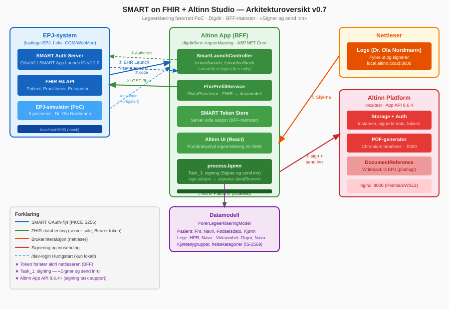
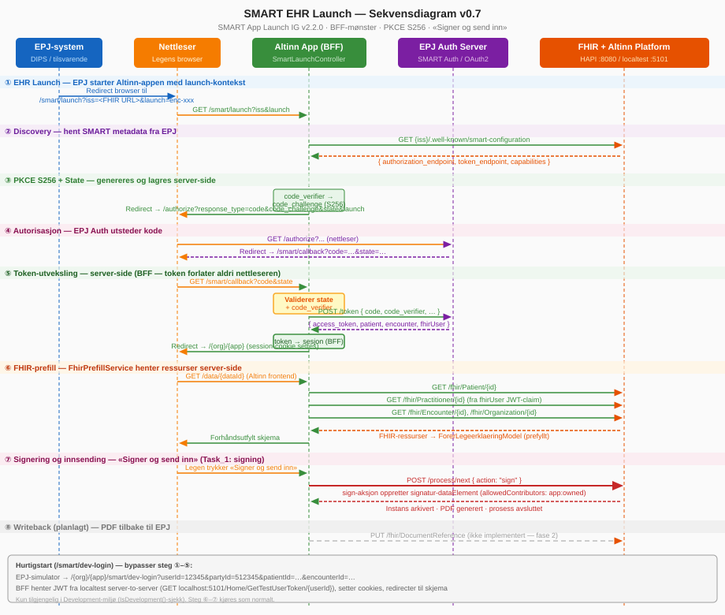
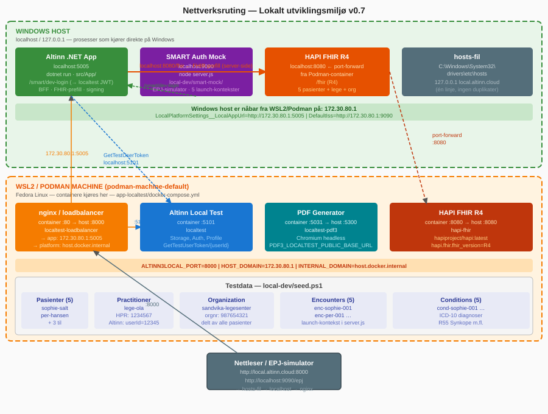

Flyt og arkitektur
Fra legen trykker på en knapp i journalen til skjemaet er prefylt og signert: SMART EHR Launch, token-utveksling, FHIR-prefill og signering — og hva som ennå mangler.
En Altinn-app som BFF mot EPJ-ets FHIR-API
Legen er innlogget i fastlege-EPJ-et (for eksempel CGM Journal, Infodoc eller WebMed). EPJ-et starter en SMART EHR Launch som åpner Altinn-appen med pasient- og konsultasjonskontekst. Appen er et «backend for frontend»: den snakker OAuth og FHIR server-side, og nettleseren ser aldri tilgangstokenet.
| Komponent | Teknologi | Rolle |
|---|---|---|
| Altinn-app | ASP.NET Core / .NET 8 | BFF: SMART-flyt, FHIR-prefill, skjema |
| Altinn Platform | Altinn Studio App API 8.6.4 | Autentisering, lagring, PDF og signering |
| EPJ FHIR API | FHIR R4 | Kilde for pasient- og konsultasjonsdata |
| EPJ SMART-auth | OAuth 2.0 / SMART App Launch IG v2.2.0 | Autorisasjon for FHIR-tilgang |
Dette er fastlegesporet. DIPS Arena er et sykehus-EPJ og ikke relevant for denne bruksflyten.
SMART EHR Launch
Koden ligger i SmartLaunchControllerBase i det delte biblioteket src/SmartFhir.Common. Hver app har en tynn underklasse som bare angir klient-ID, testdata og scopes.
- 1
EPJ åpner appen
GET /{org}/{app}/smart/launch?iss=…&launch=…. Appen validererissmot en allowlist — fail-closed utenfor Development. - 2
Appen finner SMART-konfigurasjonen
Henter
{iss}/.well-known/smart-configurationog leserauthorization_endpointogtoken_endpoint. En feil her gir en trygg 502, ikke en stacktrace. - 3
PKCE og state
Genererer
code_verifier(S256-utfordring) og en tilfeldigstate, og lagrer begge i server-sesjonen. - 4
Redirect til EPJ-ets auth-server
Med
response_type=code,client_id,redirect_uri,scope,state,aud(=iss),launchogcode_challenge. - 5
Callback og token-utveksling
/smart/callbacksjekkerstatemot sesjonen og bytter koden mot token server-side. Klienten kan være public, confidential med klienthemmelighet, ellerprivate_key_jwt(se under). - 6
Kontekst lagres server-side
Token,
patient,encounterogfhirUserlegges i sesjonen. Noen EPJ-er senderfhirUserkun som JWT-claim i access token, ikke som eget felt — da dekodes claimet (uten signaturvalidering, kun til prefill) som fallback. - 7
Skjemaet åpnes og prefylles
Brukeren sendes til skjemaet, og
FhirPrefillService(enIDataProcessor) leser konteksten og fyller feltene.
Standard-scopes
openid profile fhirUser launch launch/patient launch/encounter offline_access
patient/Patient.read patient/Encounter.read
user/Practitioner.read user/Organization.read user/PractitionerRole.readHver app kan overstyre scopes. Førerrett-appen legger til patient/Condition.read og patient/DocumentReference.write; kjeveortopedisk-appen bruker standardsettet uten tillegg.
Dette mangler før produksjon
Validering av access token mot EPJ (signatur, utsteder, audience), en fylt issuer-allowlist og en distribuert sesjon (i dag ren in-process-hukommelse) er ikke bygget. Se risikoregisteret (R4, R11).
FHIR-prefill: fem ressurstyper
Det delte biblioteket henter og tolker ressursene til et app-nøytralt objekt (StandardFhirPrefillData). Hver app mapper det videre til sin egen datamodell. Enkeltkall som feiler logges og hoppes over — resten av prefillen fullføres likevel.
| Ressurs | Hentes fra | Gir |
|---|---|---|
Patient | Patient/{patient} fra token | Fødselsnummer (OID …4.1), navn, fødselsdato, kjønn, første adresse |
Practitioner | fhirUser (full URL eller relativ referanse) | HPR-nummer (OID …4.4), navn |
PractitionerRole | ?practitioner={id} | Referanse til virksomheten |
Organization | Fra rollen, ellers fra Encounter.serviceProvider | Navn, organisasjonsnummer (…4.101), HER-id (…4.2) |
Encounter | Encounter/{encounter} fra token | Konsultasjonsdato (period.start) |
Condition | Aktive, nyeste, evt. for konsultasjonen | Diagnosekode og -tekst — kun relevant for førerrett |
OID-ene har prefikset 2.16.578.1.12.4.1., for eksempel urn:oid:2.16.578.1.12.4.1.4.1 for fødselsnummer. «Henviser» brukes som feltprefiks (ikke «Lege»), fordi HPR dekker all autorisert helsepersonell — bekreftet med både lege og tannlege.
Samme app, to innganger
Ikke alle EPJ-leverandører har SMART-støtte. Derfor skal legen også kunne bruke appen ved å logge inn i Altinn som vanlig (ID-porten). Det er det som skiller Altinn-modellen fra en frittstående SMART-app eller en EPJ-innebygd løsning, som begge forutsetter SMART-launch.
| A — SMART EHR Launch | B — Vanlig Altinn-pålogging | |
|---|---|---|
| Forutsetning | EPJ støtter SMART App Launch | Ingen |
| Pasientkontekst | Kjent fra launch | Må oppgis manuelt |
| FHIR-prefill | Automatisk | Ikke mulig — ingen FHIR-tilkobling |
| Status | Verifisert | Fungerer, men ikke designet eller testet bevisst |
Prefill-tjenesten hopper stille over når SMART-kontekst mangler, så skjemaet vises tomt og klart for manuell utfylling. Hva som mangler for en bevisst designet modus (modus-deteksjon, pasientoppslag, HPR-bekreftelse) står i docs/DOBBEL-INNGANGSMODUS.md og veikartets fase 1b.
«Signer og send inn» som én handling
Prosessen har én signing task (Task_1 i process.bpmn). Legen signerer og sender inn i samme handling; signaturdata opprettes av sign-aksjonen i Altinn.App.Api 8.6.4 eller nyere.
Konklusjonen (for førerrett: grønt eller rødt per kjøretøygruppe) er modellert separat fra hele attesten. Den tenkte mottaksmodellen er to-lags: konklusjonen til Statens vegvesen via Altinn Events, og full attest til EPJ som writeback. Selve Events-abonnementet er ikke avtalt med SVV (se beslutning C-3).
Tre måter å identifisere appen overfor EPJ-et
| Klienttype | Autentisering | Konfigurasjon |
|---|---|---|
| Public | Ingen — kun code_verifier (PKCE) | Både hemmelighet og nøkkelsti tomme |
| Confidential symmetric | HTTP Basic med client_id:client_secret | SmartOnFhir:ClientSecret |
| Confidential asymmetric | private_key_jwt (RFC 7523, RS384) | SmartOnFhir:ClientAssertionPrivateKeyPath |
Fallgruve
Hvis både klienthemmelighet og nøkkelsti er satt, vinner private_key_jwt stille. Skal du teste hemmelighet isolert, må nøkkelstien være fjernet. Hemmeligheter og private nøkler legges aldri i repoet — se onboarding.
Tre diagrammer fra repoet

docs/arkitektur-oversikt.svg).
docs/smart-launch-sekvens.svg).
docs/nettverksruting.svg).